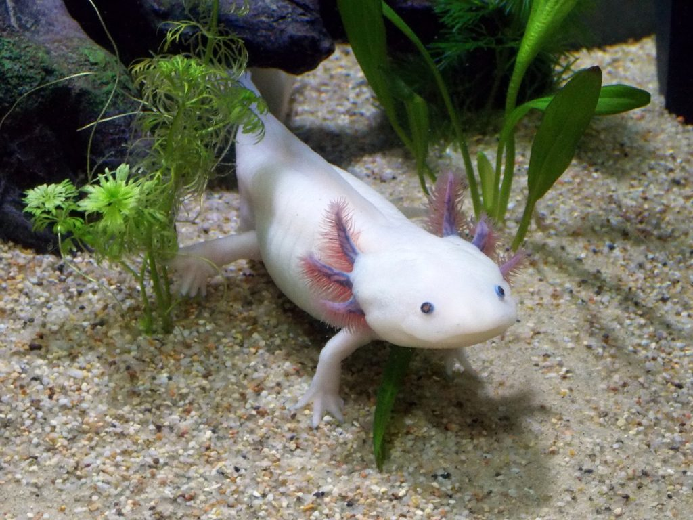
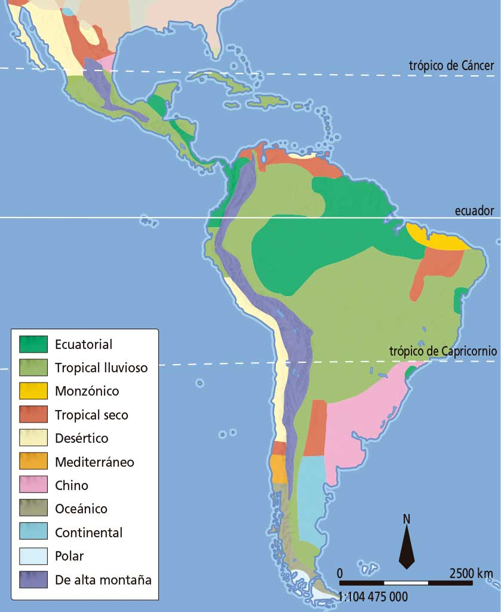
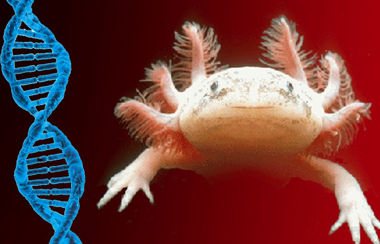
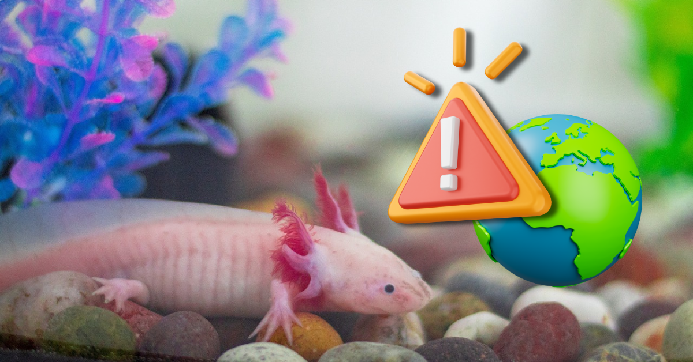

AJOLOTE MEXICANO (Ambystoma mexicanum)
Si hay un animal acuático lindo, ese es el ajolote o axolotl mexicano...
Se encuentra en peligro crítico de extinción por la pérdida de hábitat...

Características generales
- Un ajolote adulto tiene una longitud entre 15 y 35 cm...
- Las branquias externas generalmente se pierden cuando las salamandras maduran...
- Las cabezas de los ajolotes son anchas...
- Los ajolotes tienen dientes vestigiales apenas visibles...

Alimentación
Su dieta es muy variada y en vida silvestre incluye pequeños peces, alevines y acociles...
Hábitat
El ajolote es nativo del Valle de México, más concretamente del sistema de canales de Xochimilco...

Datos curiosos
- Coloración
Un ajolote con coloración típica... - Capacidades regenerativas
La característica del ajolote que más llama la atención... - Genoma
En 2018, se publicó la larga secuencia del genoma del ajolote...



Estado de conservación
El ajolote se encuentra en la categoría de peligro crítico de extinción según la lista roja de la UICN...

Medidas de conservación
Las acciones de conservación se centran en la mejora del lago de Xochimilco...
Proyectos de conservación
- Axolotitlán. El Museo Nacional del Ajolote...
- Santuario del Ajolote Planeta...
- Umbral Axochiatl Xochimilco...
- Centro de Investigaciones Biológicas...

| Característica | Detalle |
|---|---|
| Nombre común | Ajolote |
| Nombre científico | Ambystoma mexicanum |
| Familia | Ambystomatidae |
| Hábitat | Lagos y lagunas de agua dulce en México, especialmente en Xochimilco |
| Alimentación | Carnívoro; se alimenta de pequeños invertebrados, peces... |
| Tamaño | De 15 a 45 cm de largo |
| Peso | Entre 30 y 100 gramos |
| Esperanza de vida | De 10 a 15 años en cautiverio |
| Reproducción | Ovovivíparo, los huevos se desarrollan fuera del cuerpo |
| Características físicas | Posee branquias externas rojas, cuerpo alargado... |
| Estado de conservación | En peligro de extinción debido a la pérdida de hábitat... |